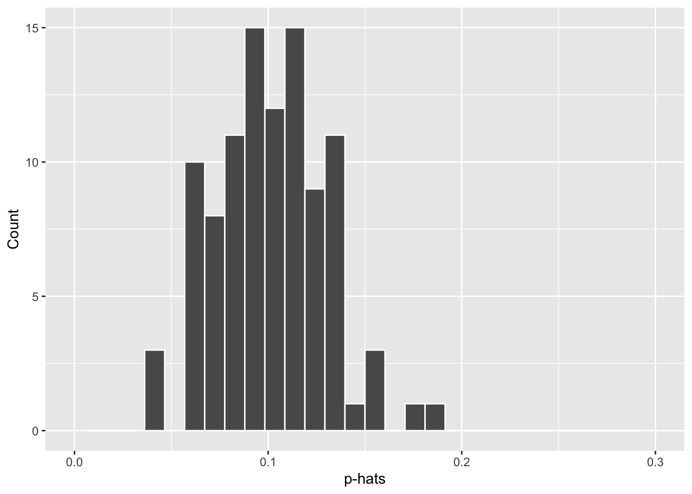

Success-failure condition
We have emphasised that you must always check conditions needed for central limit theorem to apply before making inference. For inference on proportions, the sample proportion can be assumed to be nearly normal if it is based on a random sample of independent observations and if both \(np \geq 10\) and \(n(1 - p) \geq 10\). This rule of thumb is easy enough to follow, but it makes you wonder: what's so special about the number 10?
The short answer is: nothing! You could argue that you would be fine with 9 or that you really should be using 11. What is the "best" value for such a rule of thumb is, at least to some degree, arbitrary. However, when \(np\) and \(n(1-p)\) reaches 10 the sampling distribution is sufficiently normal to use confidence intervals and hypothesis tests that are based on that approximation.
We can investigate the interplay between \(n\) and \(p\) and the shape of the sampling distribution by using simulations. We simulate the process of drawing a large number of samples of size \(n\) from a population with a true proportion of \(p\). For each of the samples we compute \(\hat{p}\) and then plot a histogram to visualise their distribution.
Using the numerical and graphical summaries below, describe the sampling distribution of sample proportions at \(n=100\) and \(p=0.1\). Be sure to note the centre, spread, and shape.

## Min. 1st Qu. Median Mean 3rd Qu. Max.
## 0.03762 0.08300 0.10080 0.10143 0.11939 0.18172Look carefully at the centre, shape and spread, comparing to the numerical summaries as well.
Exercise 6
Run the code below, changing the value of n to see how the sampling distribution of sample proportions varies as \(n\) varies.
p <- 0.15
n <- 100
data1 <- rnorm(n=n, mean=p, sd=sqrt(p*(1-p)/n))
ggplot(mapping = aes(x = data1)) +
geom_histogram(color = "white") +
xlim(0, 0.3) +
labs(y ="Count", x = "p-hats")Look carefully at the rough centre/symmetric points of the graphs, and consider the width/spread of the overall graphs.
Exercise 7
Run the code below, changing the value of p to see how the sampling distribution of sample proportions varies as \(p\) varies.
p <- 0.1
n <- 100
data2 <- rnorm(n=n, mean=p, sd=sqrt(p*(1-p)/n))
ggplot(mapping = aes(x = data2)) +
geom_histogram(color = "white") +
xlim(0, 1) +
labs(y ="Count", x = "p-hats")Look carefully at the rough centre/symmetric points of the graphs, and consider the width/spread of the overall graph.